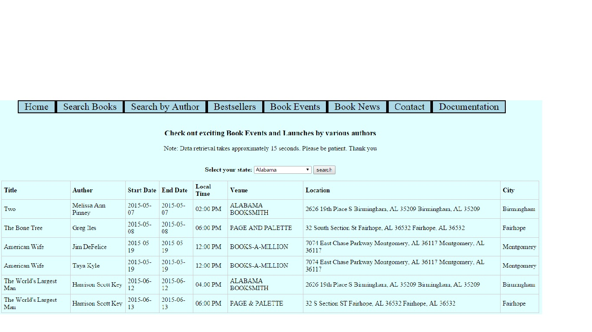
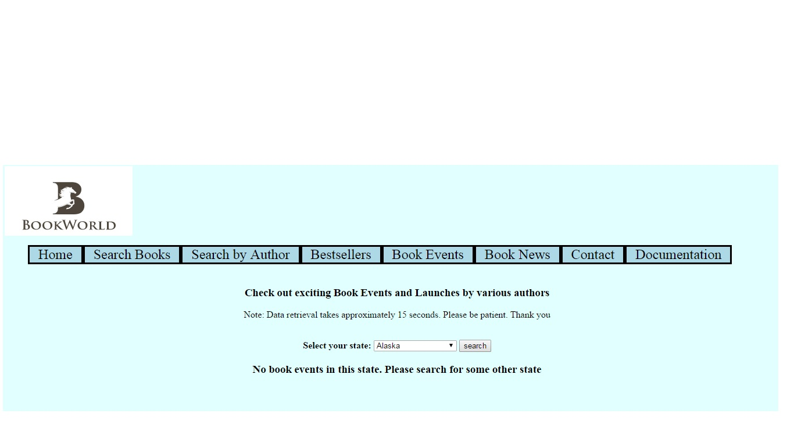

Book Events consists of a list of book events in the US, users can enter their state from the dropdown list for knowing about the latest book events.
- If events exist in that state, then the user is notified with fields like author,book title, start and end dates of the event, local time, location, venue,city rendered in a table.
- The main reason for using the tabular structure is that a lot of data can be showcased to the user.
- If no events exist in that particular state, the user is shown a message saying no events occuring in the state. Search for other nearby states.
- This page is completely responsive and it turns into a vertical table for mobile phones and tablets.
- The search results are returned from Harper Collins API that fetches data using JSON. It has a limit of 4 calls a second and 7000 calls a day.
- The shortcoming of the Harper Collins API is that searching for data takes 15seconds.This is a fairly long duration which demands for patience from potential users.
- The API requires key authentication that requires the apikey to be stored secretly. This is done using Prof Rasala's getkey utility.
- Cases where a user enters a state for which events don't exist, then the user is prompted to search again with a different state name.

The above pic is a demonstration of events being present for a particular state as entered by the user.

The above pic is a demonstration of no events for a particular state as entered by the user.
Further Work : The page can be made more visually appealing by applying more css to the table.
Source Code
ASPX Code
JS Code
CSS Code
References
CSS Tricks
Harper Collins API